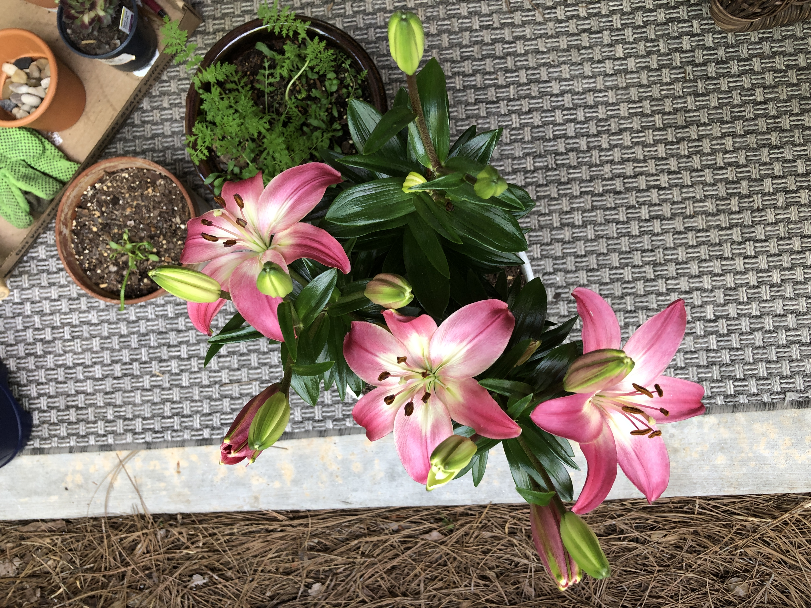

Plant Journal
It has always been really interesting to me the rate at which plants grow. I thought that journaling about the growth and progress of my plants would be a cool way for me to both add extra content to my website and build a relationship with my audience. I also decided to plant chive seeds in hopes that you will be able to see the growing process from seed to germination!
April 29, 2020
My first day of documentation! My lilies look like they are ready to bloom any second and I am so excited. My boyfriend thinks that they’ll bloom white considering the color of them currently. I’m pretty indifferent, they’ll be pretty regardless. My cucumbers have finally sprouted cucumber leaves (the leaves that are rigid looking), which means that I need to move them to a bigger pot so that the actual cucumbers have room to grow. My sunflowers are growing so fast, I have had to buy wire and stakes to keep them from being top heavy. They look a little discolored, but thats from me not thinking twice and pouring the fertilizer on the leaves by accident.
May 1, 2020
One or two lilies have partially opened and are a white color, not sure what this means. Some buds on the lilies have started to turn a pink color. Will have to keep an eye on them. My cucumber leaves are getting a lot bigger. Still need to move them to a new pot. My sunflowers are still growing at a rapid pace, the wire has needed to be moved up the stakes. Some have also developed more leaves, blooming season might be around the corner.
May 3, 2020
I’ve now had a total of three lilies bloom! They’re a deep pink color and absolutely beautiful! The other two pots with plants seen in this picture are mixed flowers, although I haven’t seen any actual flowers so far.

May 5, 2020
Five lilies! I’m officially obsessed and can’t wait to see how many more I get! The chives have officially been planted as well! I also finally got around to moving the cucumbers to a bigger pot. All actions have been shown below!